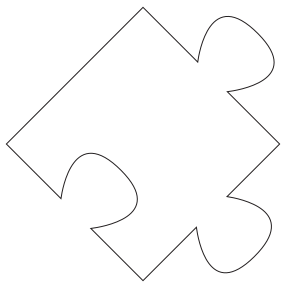
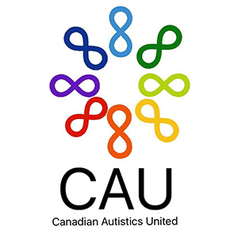
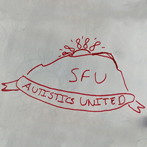
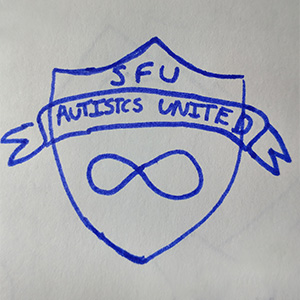
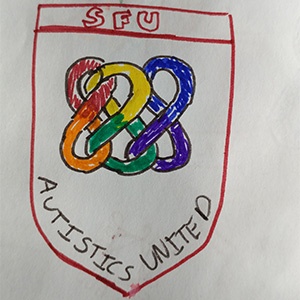
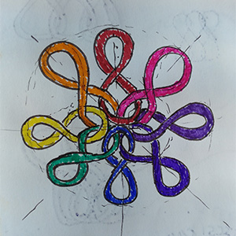
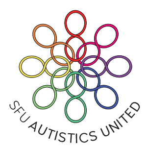
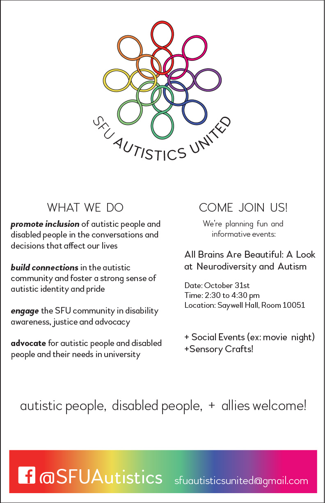
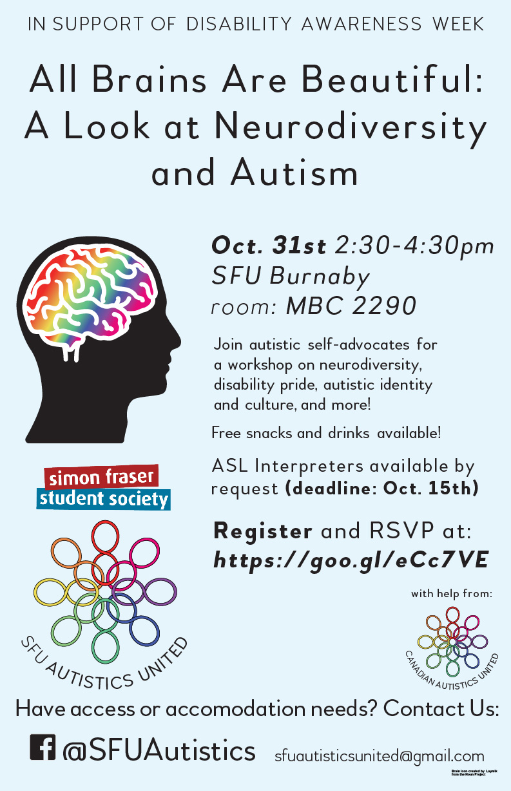

Create a logo that represented SFU Autistics United in a way that also connected the club to Canadian Autistics United (CAU).
Tools
Adobe Illustrator, sketching.
In August 2017, my friend approached me to join their new club, SFU Autistics United. It’s a branch of a new organization, Canadian Autistics United (CAU). They promote the inclusion of autistic people in decisions that affect them, advocate for their needs, and make connections within autistic and disability communities. I was excited to join, and I was eager to help and offered my skills to create the logo.
Design Considerations
I had to be mindful of how the club would be represented. In the autism community, there is conversation around the negative connotations of using the puzzle piece to represent autism. One solution is the infinity symbol, which has a more positive and accepting meaning. SFU Autistics United wanted to focus on this symbol for its connotations and to be better associated with CAU and their concept logo.

The puzzle piece has been a common symbol for autism advocacy, but it suggests that autism is a puzzle that must be solved. This is often hurtful and alienating for autistic people.
The infinity loop with a rainbow gradient is a more positive symbol with its association with the Neurodiversity movement, which promotes accepting differences like autism. More info on this topic can be found here.

This sketch was for the CAU Logo, which was sent to me as a design consideration.
Sketching and Choosing a Design
In my sketching, I explored different ways to incorporate the infinity symbol. It was important that the club believed the logo represented them, so I had them vote on the design.
These sketches were more popular because they focused more on the autism identity of the club.



Some less popular sketches, since it focused more on the SFU identity than the autism identity.
The chosen sketch was very similar to the CAU sketch provided to me. However, having the loops connect created a greater sense of unity.

Digital Creation
Next was to create a digital copy, I chose a more visually sound rainbow palette, as opposed to an overwhelming neon or intense rainbow. The club founder suggested that I use the curved text from a previous sketch. After voting on the font, the SFU Autistics United logo was born!

Result
The logo was very well received. So much that CAU also wanted to use it. It's currently on their facebook page for national and local divisions.
Today, I'm still involved in the club, helping with other materials that need graphic design. I'm proud of the work I’ve done and I can’t wait to do more!

I poster I made for club's day event at SFU. The full version can be opened here.

An event poster I made for a neurodiversity workshop the club ran. PDF version is here.